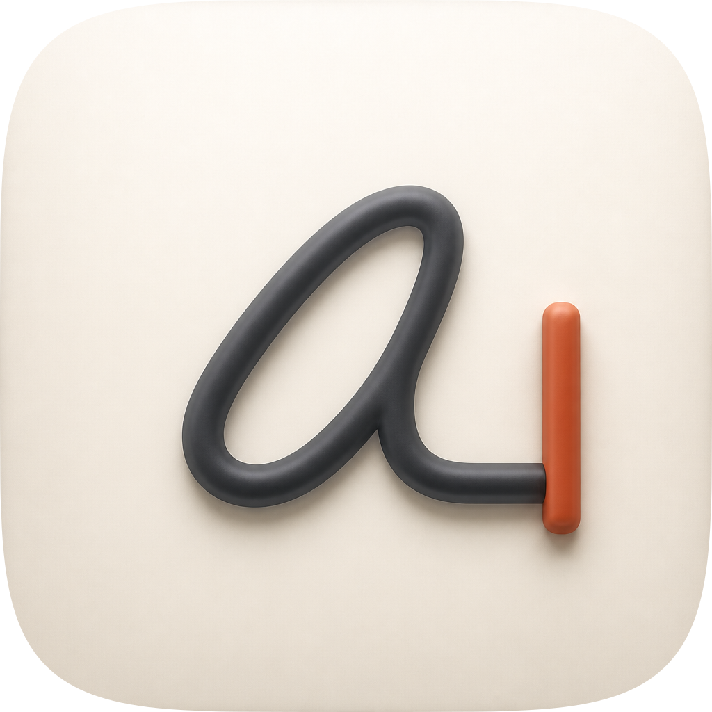
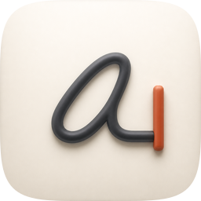
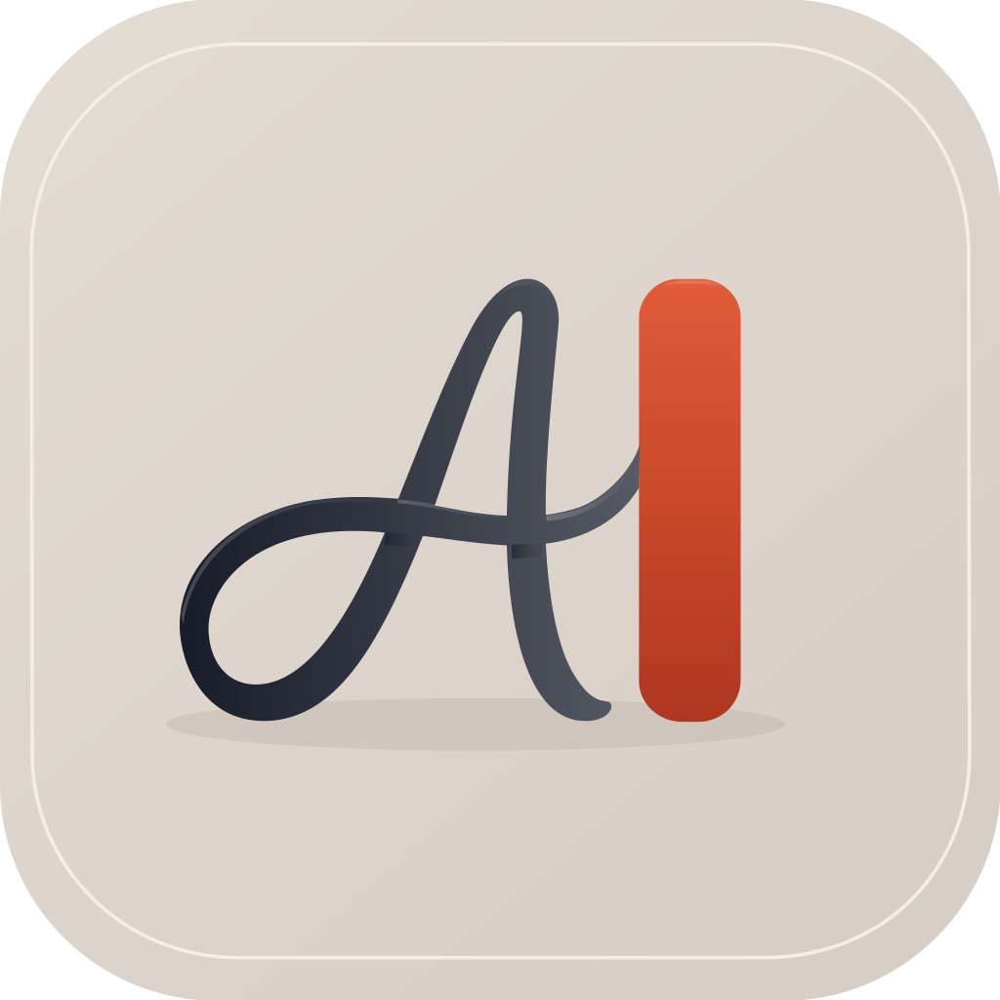
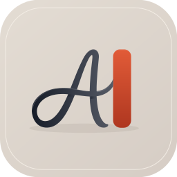
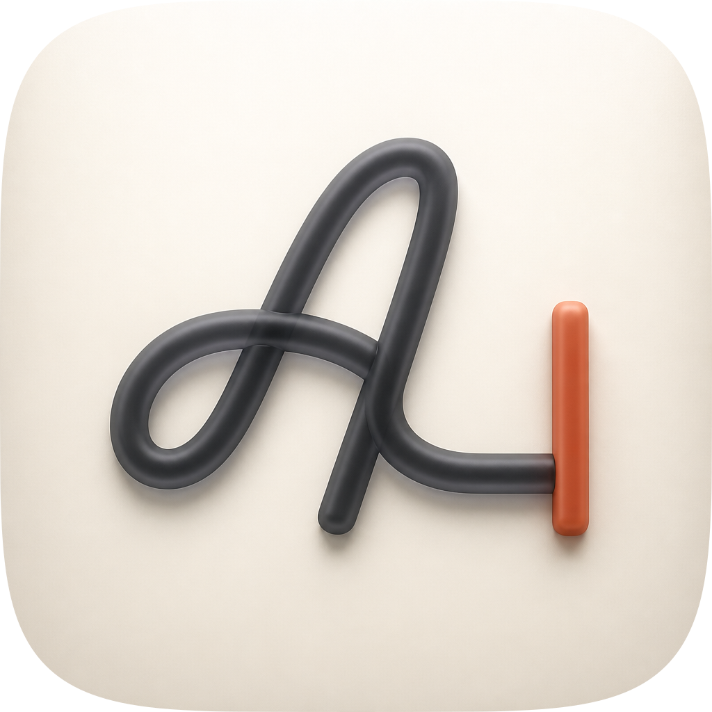
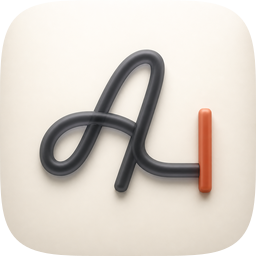
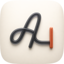
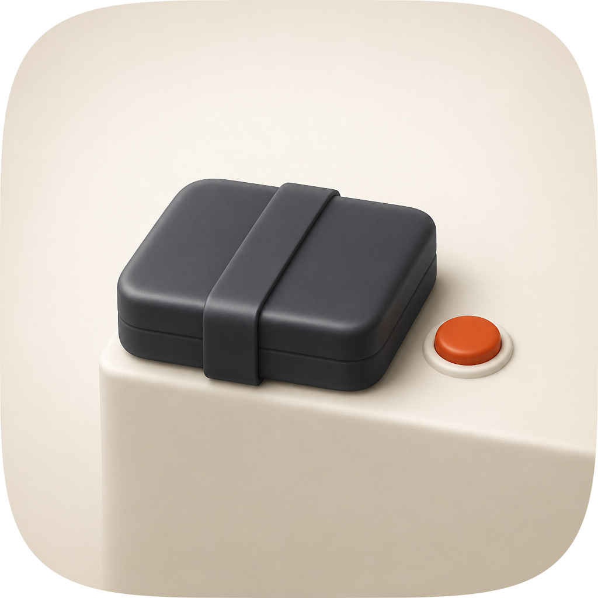
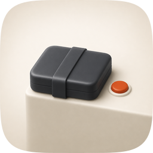
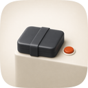

| Take | Hero at 1024, then renders at 128 / 64 / 48 / 32 / 16 css px (2× retina sources), plus the 16px squint magnified | Rubric | Verdict |
|---|---|---|---|
| A-master · icon.svgEngine A, hand-authored layered SVG from build_icon.py — SHIPS | 11 / 12 | Checks 1–4 clear on the renders: the tile is the family superellipse as a clip with no baked corner or shadow; the object is 65.5% of the tile with a stated 25px leftward offset; the silhouette is nameable filled black; and the 16px cell measures 0.2415 luminance spread against a family median of 0.2146 across 40 siblings, 27th of 41. Ink reads 8.64:1 against the ground, the gate 3.76:1, and grayscale holds three tiers at 59 / 113 / 234. Four real layers over a swappable ground. The deduction is #12: a letterform is text-adjacent and passes only as a diegetic monogram, so a reader who does not know Atlas sees a decorative script a rather than a brand. | |
| C-gate · icon-engineC-gate-ad804f.pngEngine C, GPT Image 2 raster, corpus-referenced (apple-10 + apple-26 + a sibling icon) |   |
8 / 12 | Won the material read outright and is the reference the master was built against: the smoothest gel tube in the set, correct warm porcelain, one soft top light, a real contact shadow. Lost on two things it cannot fix. It is a flat pre-masked raster, so #10 fails by construction — identity is a colour relationship with no layers under it. And it drew its own loopy letterform rather than Atlas's, so the one thing making this icon this plugin's is absent. Its material language was rebuilt into the master; the file itself is a target, never a deliverable. Measured: it carries 0.45–0.47 internal contrast where the master carries 0.68 at every size, which is the raster engine's known low-figure-ground habit. |
| B-arrow · icon-engineB-arrow-7dcd4c.svgEngine B, Arrow 1.1 vector take from the spec as brief |   |
6 / 12 | Hard fail on #1: it baked its own rounded-corner mask, at a radius that is not the family superellipse, so it would read as an error in a marketplace lineup at every size. Flat throughout — no rim, no extrusion, no contact shadow — which fails #8 and dates it to the previous era on #9. It earned its place anyway, and this is what Engine B is for: it was the only take to draw the tall arching entry stroke that separates a script capital A from a lowercase a, and that observation is why the cut in the master lands where it does. Nothing else was salvaged. |
| C-gate1 · icon-engineC-gate-0eb2a6.pngEngine C, first raster pass, no brand mark in the references |    |
7 / 12 | The take that settled the concept, and then lost to its own successor. Its gel is excellent and its gate is a pill, which is exactly the trap the master later had to design out: a rounded bar sitting after a letter reads as a text caret, not as a barrier. The letterform is furthest of any take from the brand mark. Kept in the sheet because the pill/slab comparison is the single most useful thing in this commission and it only exists here. |
| C-lip · icon-engineC-lip-b9426d.pngEngine C, the losing concept: a sealed bundle held at the lip of a stage |    |
5 / 12 | The brief's second candidate concept, built so the choice would rest on renders rather than description. Hard fail on #4: at 16px it is a grey blob with a sub-pixel dot, because half the tile is spent on an empty pale stage and the release control is small by the logic of the idea. It also breaks the family's front-facing grammar with a perspective 3D scene (#9), and the metaphor is the most crowded in the marketplace — ship-feature, ship-fleet, shipyard and create-swe-project already own ramps, slipways and hulls, and better-loop owns a block held on a track. Rejected on evidence, not on taste. |
| ink vs ground, WCAG contrast on the 1024 render | 8.64 : 1 |
| gate vs ground | 3.76 : 1 |
| gate vs ink — the one boundary below the floor | 2.30 : 1 |
| grayscale tiers, ink / gate / ground | 59 / 113 / 234 |
| 16px luminance spread (gamma-encoded, composited over white) | 0.2415 (27th of 41) |
| — same measure across 40 marketplace siblings | median 0.2146, p75 0.2597 |
| gate's smallest dimension at 16px (needs > 1.5px to be present at all) | 2.07 px |
| master structure gate | PASS — 4 paths, 9 gradients, 6 filters, 4 named groups |
| internal contrast, master vs the raster reference at 1024 / 128 / 32 | 0.68 vs 0.45–0.47 |
| perceptual material metric | not run — unavailable on this machine |
| blind three-family panel, master vs Arrow take | no majority — 2 of 3 lanes down; see icon-notes.md |
python3 scripts/audit_sheet.py render <dir> (1024 / 256 / 128 / 96 / 64 / 32 sources); verified by its check subcommand. Contrast figures are WCAG relative luminance over median region samples on the shipped 1024 render, not eyedropper points.